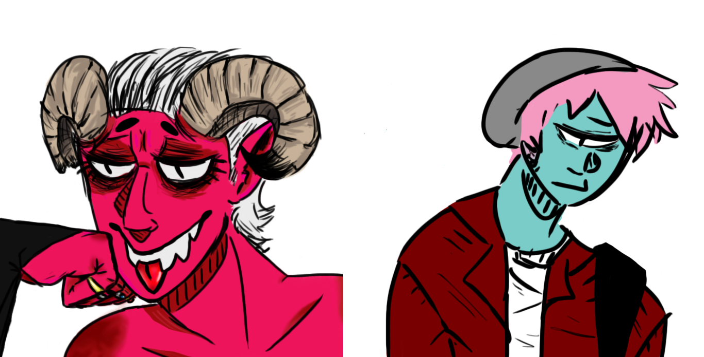

Stars Astray
In Stars Astray, you take the role of a young traveller who ends up in a town called Stjernheim. Soon, you find yourself wrapped up in local events that spiral out of control, drawing you deeper and deeper into Stjernheim's strange history and even stranger inhabitants.
Stars Astray is part mystery novel, part fantasy adventure. You're encouraged to explore every inch of Stjernheim in search of clues, interact with the inhabitants of the town (both friendly and otherwise) using a dynamic conversation system, and find creative solutions to overcome obstacles using a variety of tools.